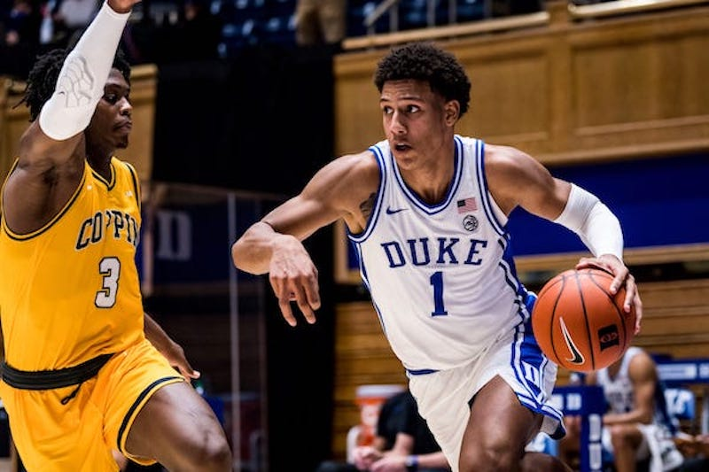

2021 NBA Draft: What Will the Spurs Do With the 12th Pick?
Spurs Draft Outlook
The Spurs youth movement is now in full effect! After years of seeing Tim Duncan, Tony Parker, and Manu Ginobili taking the court, the reigns are now being handed over to the likes of Dejounte Murray, Lonnie Walker, and Keldon Johnson.
There's a lot to like about this young core, but after two-straight years of missing the playoffs for the first time in team history, it's obvious there is a lot of room to grow. For the 2021 NBA Draft, the Spurs will be picking 12th overall. What are thier options and who should fans me looking out for on draft night?